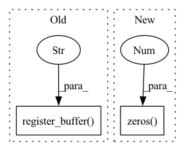

Pattern ID :7091
Before Change
// Probably not a good idea
// Actually maybe OK - TODO test
self.register_buffer("running_mean", torch.zeros(input_dim))
self.register_buffer("running_var" , torch.ones(input_dim))
self.reset_parameters()
def reset_parameters(self):After Change
if affine is True:
self.gamma = nn.Parameter(torch.ones(1, input_channels, 1, 1))
self.beta = nn.Parameter(torch.zeros( 1, input_channels, 1, 1 ) )
def forward(self, x):
In pattern: SUPERPATTERN
Frequency: 3
Non-data size: 2
Instances Fragment ID: 23640136
Project Name: justin-tan/high-fidelity-generative-compression
Commit Name: 0a03b6798daac7b297519d0d6a888f21e04a6d67
Time: 2020-08-06
Author: justan@student.unimelb.edu.au
File Name: hific/utils/normalization.py
M Class Name: ChannelNorm2D
N Class Name: ChannelNorm2D
M Method Name: __init__(5)
N Method Name: __init__(6)
M Parent Class: nn.Module
N Parent Class: nn.Module
M File Name: hific/utils/normalization.py
N File Name: hific/utils/normalization.py
M Start Line: 44
M End Line: 56
N Start Line: 45
N End Line: 46
Before Change
self.na = len(anchors[0]) // 2 // number of anchors
self.grid = [torch.zeros(1)] * self.nl // init grid
a = torch.tensor(anchors).float().view(self.nl, -1, 2)
self.register_buffer("anchors" , a) // shape(nl,na,2)
self.register_buffer("anchor_grid", a.clone().view(self.nl, 1, -1, 1, 1, 2)) // shape(nl,1,na,1,1,2)
self.m = nn.ModuleList(nn.Conv2d(x, self.no * self.na, 1) for x in ch) // output conv
After Change
self.nl = len(anchors) // number of detection layers
self.na = len(anchors[0]) // 2 // number of anchors
self.grid = [torch.zeros(1)] * self.nl // init grid
self.anchor_grid = [torch.zeros(1 ) ] * self.nl // init anchor grid
self.register_buffer("anchors", torch.tensor(anchors).float().view(self.nl, -1, 2)) // shape(nl,na,2)
self.m = nn.ModuleList(nn.Conv2d(x, self.no * self.na, 1) for x in ch) // output conv
self.inplace = inplace // use in-place ops (e.g. slice assignment)
Fragment ID: 23640138
Project Name: pooya-mohammadi/deep_utils
Commit Name: 7d442fe6eef7ccd63661e0463e87358ff795d709
Time: 2021-11-26
Author: practical.ai.programming@gmail.com
File Name: deep_utils/vision/object_detection/yolo/v5/torch/models/yolo.py
M Class Name: Detect
N Class Name: Detect
M Method Name: __init__(5)
N Method Name: __init__(4)
M Parent Class: nn.Module
N Parent Class: nn.Module
M File Name: deep_utils/vision/object_detection/yolo/v5/torch/models/yolo.py
N File Name: deep_utils/vision/object_detection/yolo/v5/torch/models/yolo.py
M Start Line: 29
M End Line: 37
N Start Line: 40
N End Line: 50
Before Change
self.na = len(anchors[0]) // 2 // number of anchors
self.grid = [torch.zeros(1)] * self.nl // init grid
a = torch.tensor(anchors).float().view(self.nl, -1, 2)
self.register_buffer("anchors" , a) // shape(nl,na,2)
self.register_buffer("anchor_grid", a.clone().view(self.nl, 1, -1, 1, 1, 2)) // shape(nl,1,na,1,1,2)
self.m = nn.ModuleList(nn.Conv2d(x, self.no * self.na, 1) for x in ch) // output conv
self.inplace = inplace // use in-place ops (e.g. slice assignment)After Change
self.nl = len(anchors) // number of detection layers
self.na = len(anchors[0]) // 2 // number of anchors
self.grid = [torch.zeros(1)] * self.nl // init grid
self.anchor_grid = [torch.zeros(1 ) ] * self.nl // init anchor grid
self.register_buffer("anchors", torch.tensor(anchors).float().view(self.nl, -1, 2)) // shape(nl,na,2)
self.m = nn.ModuleList(nn.Conv2d(x, self.no * self.na, 1) for x in ch) // output conv
self.inplace = inplace // use in-place ops (e.g. slice assignment) Fragment ID: 23640139
Project Name: ultralytics/yolov5
Commit Name: 9d75e42f9811718a1f5a821f2425484524df074f
Time: 2021-10-11
Author: njebastin10@gmail.com
File Name: models/yolo.py
M Class Name: Detect
N Class Name: Detect
M Method Name: __init__(5)
N Method Name: __init__(5)
M Parent Class: nn.Module
N Parent Class: nn.Module
M File Name: models/yolo.py
N File Name: models/yolo.py
M Start Line: 44
M End Line: 49
N Start Line: 44
N End Line: 48